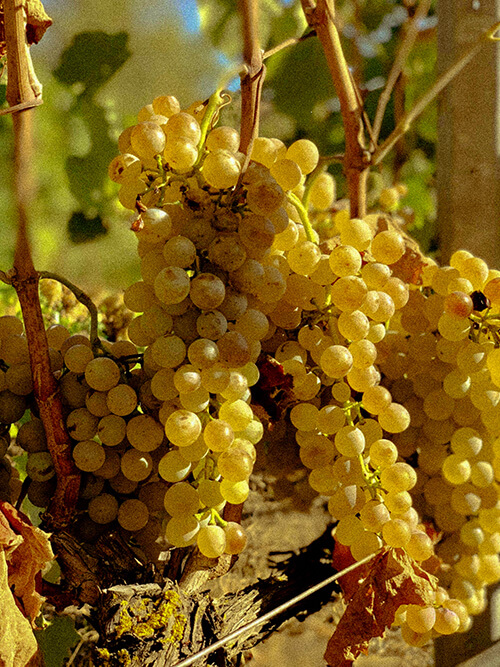
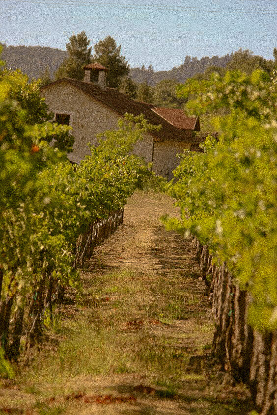

LE
VIN
ET LA
TYPOGRAPHIE
Vinocolpo est une typographie destinée aux amateurs de vins.
Elles à un aspect très particulier alliant largeur et finesse.
Le design est inspirée des fameuses carafe ou décanteur de vins.
Elles est à la fois ancienne et nouvelle, elle parcours le temps comme le vin le fait.

- A
- B
- C
- D
- E
- F
- G
- H
- I
- J
- K
- L
- M
- N
- O
- P
- Q
- R
- S
- T
- U
- V
- W
- X
- Y
- Z
- 0
- 1
- 2
- 3
- 4
- 5
- 6
- 7
- 8
- 9
- .
- ,
- ?
- !
- #
A


V
I
N
O
C
O
L
P
O
VIN ROUGE OU VIN BLANC
VIN ROUGE OU VIN BLANC
VIN ROUGE OU VIN BLANC
VIN ROUGE OU VIN BLANC
VIN ROUGE OU VIN BLANC
VIN ROUGE OU VIN BLANC
VIN ROUGE OU VIN BLANC
VIN ROUGE OU VIN BLANC